Odprti splet kot priložnost za razvoj
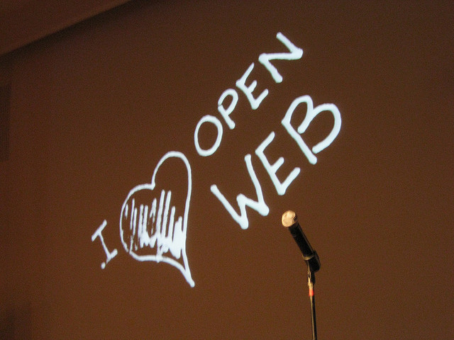
Nino Vranešič
Email: nino@mozilla.si | Twitter: @ninovranesic | FB: facebook.com/nino.vranesic
Kaj je odprti splet?
- Odprti splet je javna platforma, ki je prosto dostopna.
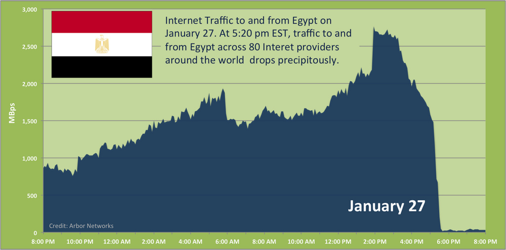
Kaj je odpri splet?
- Odprti splet je javna platforma, ki je prosto dostopna
- Je prilagodljiv ter uporabniku omogoča izbiro

Kaj je odpri splet?
- Odprti splet je javna platforma, ki je prosto dostopna
- Je prilagodljiv ter uporabniku omogoča izbiro
- Je transparenten in omogoča prosto delitev informacij ter odprto sodelovanje
Kaj je odpri splet?
- Odprti splet je javna platforma, ki je prosto dostopna
- Je prilagodljiv ter uporabniku omogoča izbiro
- Je transparenten in omogoča prosto delitev informacij ter odprto sodelovanje
- S pomočjo odprtih tehnologij, odprtih standardov ter standardizacije omogoča razvoj
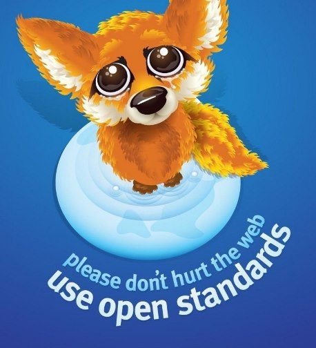
Aplikacije se selijo na splet ...
- Spletna pošta
- Koledarji
- Spletni pisarniški paketi
- Igre
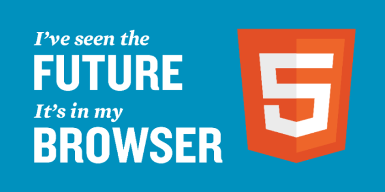
HTML5 ne zmore...
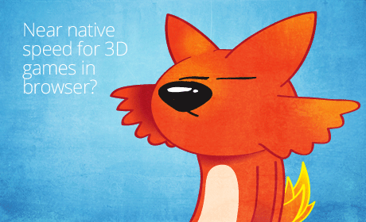
Demo: BannanaBread
Video komunikacija brez Flasha
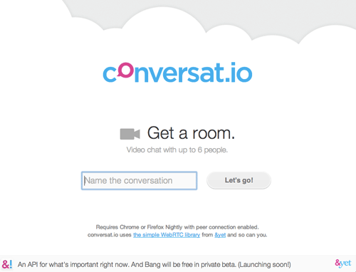
Demo: conversat.io
Zgodila se je sprememba...
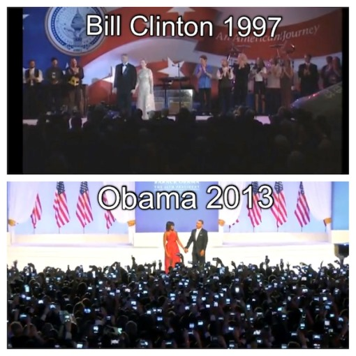
Začelo se je obetavno

Sedaj ...
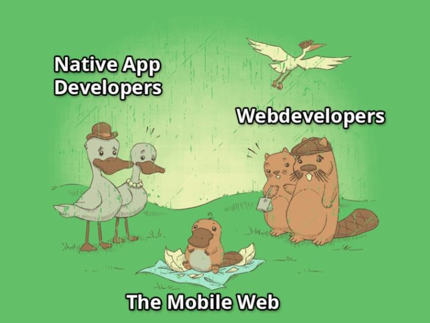
Zaprtost trga
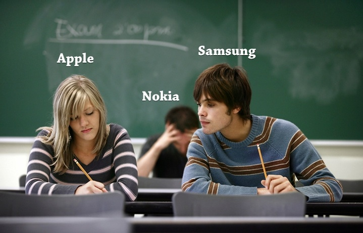
"Planirana zastarelost"
The desire to own something a little newer, a little better, a little sooner than is necessary.
Obratna filozofija - splet
- Splet ne pozna različic
- Odprto okolje
- Odprte spletne aplikacije
Odprt mobilni operacijski sistem

Mobilna svoboda
- Zmogljiv
- Odprt
- Inovativen


Firefox OS Simulator
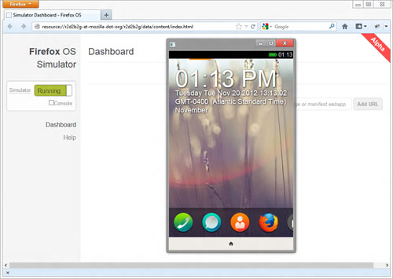
Partnerji
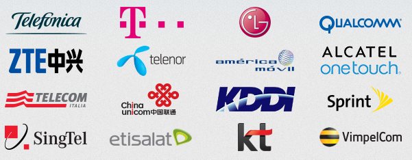
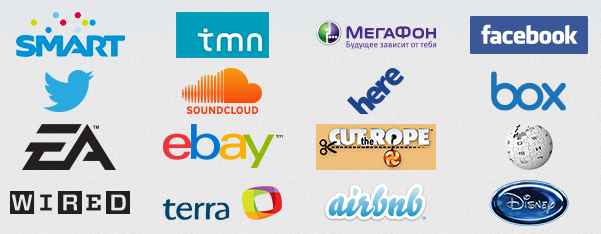
Junij 2013
- Brazilija
- Kolumbija
- Madžarska
- Mehika
- Črna gora
- Poljska
- Srbija
- Španija
- Venezuela